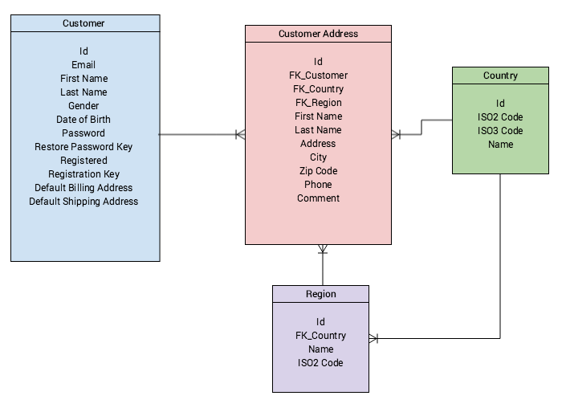

Customer
The customer entity wraps data around registered customers. Customer data is managed from the backend application(Zed) and frontend application(Yves).

Customer Address
One customer can have many customer addresses stored in the database.
There are two types of customer addresses:
Billing Address: the address to which the invoice or bill is registered
Shipping Address: the address to where the order is shipped
Customers are assigned a default billing and a default shipping address. Customers can update their addresses through their account (from Yves) or by the back-end user (from Zed).
Customer Registration
Customer registration requires two steps:
- Creating the new customer: this step can be done from both the back-end and front-end applications. Customers are created in the database if the entered details are valid. A registration key is generated for each customer and used as a token for customer registration confirmation. The key is embedded in the confirmation link sent by email.
- Confirming customer registration: Only the customer can confirm registration throught the front-end application. The customer accesses the link received in the email sent after the customer creation. By opening the link, an update is triggered that sets the customer as registered.
After these two steps are performed, the customer can use the account.
Password Restore
Similar to the customer registration flow, password restore makes use of a token that acts as a temporary password for the customer. An email is sent to the user to reset the password. The mail contains a link in which a password restore token is embedded. This token is generated specifically for this request. After the customer accesses the URL and enters the necessary confirmation data, the customer password is updated.
Delete Customer
Customers can remove themselves by clinking the Delete Account button in the Yves Profile page. In addition, this functionality is also available from the Zed panel (Customer > View > Delete).
Complete removal from the customer table is strictly prohibited as it could affect the database consistency of e-commerce projects or even be illegal in terms of tax reporting and auditing. In Spryker we don't remove identifiers from a customer table, but anonymize private information. Information related to orders and bills will stay untouched.
We use irreversible algorithms to make it impossible to repair deleted data.
After the deletion, customers can use an old email for registration. As the new registration does not have any connections to an old one (anonymized).
To prevent missing any customer related information do the following:
- Process removal for related customer objects. Here you could take care of information stored in dependent bundles or custom relations. To do so implement the CustomerAnonymizerPluginInterface. As an example, take a look at the Newsletter module plugin for unsubscribing a customer from newsletters before removal Spryker\Zed\Newsletter\Business\Anonymizer\SubscriptionAnonymizer.
- Anonymize customer address information.
- Anonymize customer private information. Information directly related to customer fields (first name, last name, date of birth etc.)
Information privacy law
When creating a custom implementation, check and follow the according legislation in your country.
Customer experience
Spryker consistently delivers the scalable framework without coupling it to a project infrastructure. As a consequence, the project should take care of impact of theCustomer Delete functionality on customer experience. Read more about session sensitive actions in Migration Guide - Customer